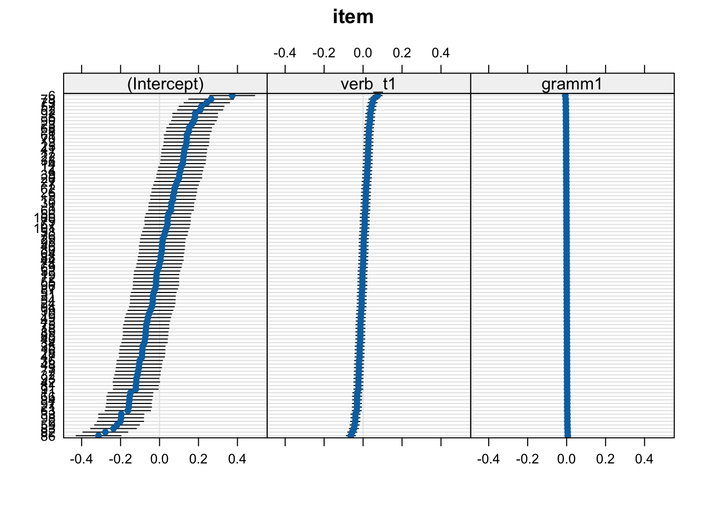

# suppress scientific notation
options(scipen=999)
options(pillar.sigfig = 5)10 Random slopes
Including varying intercepts and slopes
Under construction
This chapter is not fully translated from bullet points (from my slides) to prose. This will happen eventually (hopefully by spring 2024).
This chapter covers Chapter 14 'Mixed Models 1: Conceptual Introduction’ (from Section 14.8) and Ch 15 (Section 15.4) in Winter (2019), Winter (2014) (from page 16), and Ch. 14 (from Section 8.4) in Sonderegger (2023). We will be using the data from Biondo et al. (2022).
Learning Objectives
Today we will learn…
- how and why to add random slopes
- how to interpret random slopes
Set-up environment
Our first steps are to set-up our environment. The next two chunks are not necessary, but I use them to set some preferences, such as supressing scientific notation, and establishing a function to nicely format p-values.
Code for a function to format p-values
library(broman)
# function to format p-values
format_pval <- function(pval){
dplyr::case_when(
pval < .001 ~ "< .001",
pval < .01 ~ "< .01",
pval < .05 ~ "< .05",
TRUE ~ broman::myround(pval, 3)
)
}Load packages
We’ll also need to load in our required packages. Hopefully you’ve already install the required packages (if not, go to Chapter 3).
# load libraries
pacman::p_load(
tidyverse,
here,
broom,
janitor,
ggeffects,
sjPlot,
# new packages:
lme4,
lmerTest,
broom.mixed,
lattice)Here I also globally set my preferred ggplot2 theme so that all of my plots are formatted how I like them, without have to repeat the code for each plot. This is completely optional.
# set preferred ggplot2 theme
theme_set(theme_bw() + theme(plot.title = element_text(size = 10)))Here I set the lmer() function to be the lmerTest version.
lmer <- lmerTest::lmerLoad data
Now let’s load in our dataset from Biondo et al. (2022).
df_biondo <-
read_csv(here("data", "Biondo.Soilemezidi.Mancini_dataset_ET.csv"),
locale = locale(encoding = "Latin1") ## for special characters in Spanish
) |>
clean_names() |>
mutate(gramm = ifelse(gramm == "0", "ungramm", "gramm")) |>
mutate_if(is.character,as_factor) |> # all character variables as factors
droplevels() |>
filter(adv_type == "Deic")For a reminder of what the variables mean, refer to ?tbl-data_dictionary.
Let’s also prepare our data for our models. This means transforming our predictors accordingly. In our case, we want to ensure that verb_t and gramm are factors with sum contrast coding (Past and gramm = -0.5), and that our grouping factors (sj and item) are factors.
# sum contrast coding
df_biondo$verb_t <- as_factor(df_biondo$verb_t)
contrasts(df_biondo$verb_t) <- c(-0.5,0.5)
df_biondo$gramm <- as_factor(df_biondo$gramm)
contrasts(df_biondo$gramm) <- c(-0.5,0.5)# check
contrasts(df_biondo$verb_t) [,1]
Past -0.5
Future 0.5contrasts(df_biondo$gramm) [,1]
gramm -0.5
ungramm 0.5# grouping factors as factors
df_biondo$sj <- as_factor(df_biondo$sj)
df_biondo$item <- as_factor(df_biondo$item) 10.0.1 Review
In the last chapter we learned how to add random intercepts, which represent variance in the intercept value per level of a grouping factor. We include by-participant and by-item varying intercepts, and found that there was more variance by-participants than by-items. This is quite typical. We also saw how to plot the varying intercepts in caterpillar plots.
10.0.1.1 Model equation: random intercepts
Recall the equation of linear mixed model with varying intercepts (\(\alpha\)) for two grouping factors (\(j\) and \(k\)), given in Equation \(\ref{eq-mixed_model_k}\).
\[\begin{align} fp_i &= \beta_0 + \alpha_{j[i]} + \alpha_{k[i]}+ \beta_{verb\_t}x + \beta_{gramm}x + e_i \label{eq-mixed_model_k} \end{align}\]
If we take \(j\) to represent participants and \(k\) to represent items, then the \(j\) in \(\alpha_{j[i]}\) has 60 levels (1-60, because we have 60 participants), and \(k\) in \(\alpha_{j[i]}\) has 96 levels (1-96, because we have 96 items). And \(i\) has 3795 levels, because there are 3795 observations in our model (which we will see in a moment). Why then does 3795 not correspond to 60 participant \(x\) 96 items? This is because we have filtered the data to not include trials with non-deictic adverbs, which were presented in on third of the items (\(n\) = 32). So, we actually have 64 observations per each participant in the deictic condition. So we should have 60 participantx \(x\) 64 items = 3840 observations. Whenever our number of observations is less than we would expect, this will be due to missing observations, which are quite common. Here the missing 45 amounts to a loss of 1.2% of the data, which is not problematic.
My reason for pointing out these values is to highlight the importance of understanding your experimental design and applying it to your model. It’s also important to be able to interpret the model summary, including the reported number of observations and grouping levels per grouping factor.
10.0.2 Random slopes
Let’s return to our plots of by-participant and by-item variance.
10.0.2.1 By-participant varying intercepts and slopes
Let’s take a look at a subset of participants and items:
Code
fig_biondo_sj_ms <-
df_biondo |>
filter(sj %in% c(1,10,2,35,46,57,63)) |>
mutate(verb_t = factor(verb_t, levels = c("Past", "Future"))) |>
ggplot() +
aes(x = verb_t, y = fp,
colour = verb_t,
shape = verb_t) +
facet_wrap("sj", nrow = 1) +
# Put the points on top of lines
geom_point(position = position_jitter(0.2),
alpha = .2) +
stat_smooth(aes(group = 1), method = "lm") +
# geom_boxplot(colour = "black", alpha = 0) +
labs(y = "First-pass RT (ms)",
x = "Tense") +
geom_vline(xintercept = 1.5, colour = "grey", linetype = "dashed")+
theme(legend.position = "none") +
geom_abline(
intercept = exp(coef(fit_lm_fp)[1]-(coef(fit_lm_fp)[3]*1.5)) ,
slope = (exp(coef(fit_lm_fp)[1]+(coef(fit_lm_fp)[3]*0.5)) - exp(coef(fit_lm_fp)[1]+(coef(fit_lm_fp)[3]*-0.5)))
)
fig_biondo_sj_log <-
df_biondo |>
mutate(verb_t = factor(verb_t, levels = c("Past", "Future"))) |>
filter(sj %in% c(1,10,2,35,46,57,63)) |>
ggplot() +
aes(x = verb_t, y = log(fp),
colour = verb_t,
shape = verb_t) +
facet_wrap("sj", nrow = 1) +
# Put the points on top of lines
geom_point(position = position_jitter(0.2),
alpha = .2) +
stat_smooth(aes(group = 1), method = "lm") +
labs(y = "First-pass RT (log)", x = "Tense") +
geom_vline(xintercept = 1.5, colour = "grey", linetype = "dashed") +
theme(legend.position = "none") +
geom_abline(
intercept = coef(fit_lm_fp)[1]-(coef(fit_lm_fp)[3]*1.5),
slope = coef(fit_lm_fp)[3])Here we see that, again, the means (intercepts) for some participants and items are above the population-level mean, some are below, and some are about the same. This should come as no surprise, because a mean is a compromise between all values. Including by-participant and -item varying intercepts takes this variation into account, and quantifies the extent of the variation. This was the standard deviation and variance values we saw in our random effects structures in the last chapter.
The focus of this chapter is on the difference in the slopes, i.e., the magnitude and direction of the effect of our fixed effects. We see in Figure 10.2 that the population-level slope for tense is positive, with longer first-pass reading times for the future versus past condition. We see this is also the case for some participants (e.g., participants 1 and 10), but that some participants have a negative slope (e.g., participants 35 and 63). This is a difference in the direction, or sign (+ or -), of the effect. But there is also a difference in the magnitude, or strength, of the effect: participant 10 seems to have a “steeper” slope than participant 46, who has a somewhat flatter slope (meaning a smaller, or no, difference between the past and future conditions). Let’s see this in action.
10.0.2.2 By-item varying intercepts and slopes
10.0.2.3 By-participant random slopes
fit_lmm_sj_slope <-
lmer(log(fp) ~ verb_t +
(1 + verb_t|sj) +
(1 + verb_t| item),
data = df_biondo,
subset = roi == 4)summary(fit_lmm_sj_slope)Linear mixed model fit by REML. t-tests use Satterthwaite's method [
lmerModLmerTest]
Formula: log(fp) ~ verb_t + (1 + verb_t | sj) + (1 + verb_t | item)
Data: df_biondo
Subset: roi == 4
REML criterion at convergence: 4202.5
Scaled residuals:
Min 1Q Median 3Q Max
-4.1490 -0.6092 -0.0207 0.6106 4.0719
Random effects:
Groups Name Variance Std.Dev. Corr
item (Intercept) 0.0193662 0.13916
verb_t1 0.0025019 0.05002 0.55
sj (Intercept) 0.0664211 0.25772
verb_t1 0.0003073 0.01753 1.00
Residual 0.1601193 0.40015
Number of obs: 3795, groups: item, 96; sj, 60
Fixed effects:
Estimate Std. Error df t value Pr(>|t|)
(Intercept) 5.95639 0.03676 79.18686 162.055 < 0.0000000000000002 ***
verb_t1 0.06175 0.01414 91.57724 4.366 0.0000332 ***
---
Signif. codes: 0 '***' 0.001 '**' 0.01 '*' 0.05 '.' 0.1 ' ' 1
Correlation of Fixed Effects:
(Intr)
verb_t1 0.221
optimizer (nloptwrap) convergence code: 0 (OK)
boundary (singular) fit: see help('isSingular')10.0.2.4 By-item random slopes
Let’s not log-transform first-pass reading times just yet.
fit_lmm_sj_slope <-
lmer(fp ~ verb_t*gramm +
(1 |sj) +
(1 + verb_t| item),
data = df_biondo,
subset = roi == 4)Let’s ignore the warning we get for now and take a look at our model summary output.
summary(fit_lmm_sj_slope)Linear mixed model fit by REML. t-tests use Satterthwaite's method [
lmerModLmerTest]
Formula: fp ~ verb_t * gramm + (1 | sj) + (1 + verb_t | item)
Data: df_biondo
Subset: roi == 4
REML criterion at convergence: 51655.4
Scaled residuals:
Min 1Q Median 3Q Max
-3.0458 -0.5638 -0.1308 0.3505 10.0116
Random effects:
Groups Name Variance Std.Dev. Corr
item (Intercept) 4968.7 70.49
verb_t1 303.1 17.41 1.00
sj (Intercept) 16187.1 127.23
Residual 43834.3 209.37
Number of obs: 3795, groups: item, 96; sj, 60
Fixed effects:
Estimate Std. Error df t value Pr(>|t|)
(Intercept) 440.069 18.251 80.092 24.112 < 0.0000000000000002 ***
verb_t1 35.937 7.027 546.898 5.114 0.000000437 ***
gramm1 5.675 6.799 3637.459 0.835 0.404
verb_t1:gramm1 -7.192 13.597 3637.376 -0.529 0.597
---
Signif. codes: 0 '***' 0.001 '**' 0.01 '*' 0.05 '.' 0.1 ' ' 1
Correlation of Fixed Effects:
(Intr) vrb_t1 gramm1
verb_t1 0.100
gramm1 0.000 -0.002
vrb_t1:grm1 0.000 0.002 0.000
optimizer (nloptwrap) convergence code: 0 (OK)
boundary (singular) fit: see help('isSingular')The main difference to our random-intercepts-only models is the addition of random slope for verb_t under Name and a Correlation terms in our random effects. We refer to this as the variance-covariance matrix. Let’s first focus on the by-item varying slope. We again see that we have Variance and Std.Dev. values. Recall that standard deviation is just the square root of variance, and that the standard deviation in particular can be used to conclude the range within which our by-item varying slopes will fall into using the 68% and 95% rule, assuming a perfect normal distribution (which we almost certainly don’t have because we haven’t logged our dependent variable). Our population-level tense slope is approximately 35.9ms, so 68% of the by-item varying slopes for tense should be 35.9 +/- 30, meaning 5.9 and 65.9, and 95% falls between 35.9 +/- 30*2 (more specifically 1.96, but we round up to 2), meaning -24.1 and 95.9. If we look at Figure 10.4, we see this isn’t quite true. The red lines show the true range of the middle 95% of the data (the red area between Q2.5 () and Q97.5) and the middle 68% of the data (the blue area between Q16 and Q84).
Code
item_verb <- coef(fit_lmm_sj_slope) |>
pluck("item") |>
rownames_to_column(var = "item") |>
rename(intercept = `(Intercept)`)
# set quantiles
q5 <- quantile(item_verb$verb_t1,.025)
q95 <- quantile(item_verb$verb_t1,.975)
q16 <- quantile(item_verb$verb_t1,.16)
q84 <- quantile(item_verb$verb_t1,.84)
x.dens <- density(item_verb$verb_t1)
df.dens <- data.frame(x = x.dens$x, y = x.dens$y)
# plot
fig_res_density <-
item_verb |>
ggplot() +
aes(x = verb_t1) +
labs(title = "By-item varying slopes (verb_t) density",
x = "Intercept",
y = "Density") +
geom_density() +
geom_area(data = subset(df.dens, x >= q5 & x <= q95),
aes(x=x,y=y), fill = 'red',
alpha = .4) +
geom_area(data = subset(df.dens, x >= q16 & x <= q84),
aes(x=x,y=y), fill = 'blue',
alpha = .4) +
geom_vline(colour = "black",
linetype = "dashed",
aes(xintercept = fixef(fit_lmm_sj_slope)[2])) +
geom_vline(colour = "blue",
linetype = "dashed",
aes(xintercept = q16)) +
geom_vline(colour = "blue",
linetype = "dashed",
aes(xintercept = q84)) +
geom_vline(colour = "red",
linetype = "dashed",
aes(xintercept = q5)) +
# add labels
geom_text(label = "Q2.5",
x = q5, y = 0.02, angle = 90,
vjust = -.35,
colour = "red") +
geom_vline(colour = "red",
linetype = "dashed",
aes(xintercept = q95)) +
geom_text(label = "Q97.5",
x = q95, y = 0.02,
colour = "red", angle = 90,
vjust = -.35) +
geom_text(label = "Q16",
x = q16, y = 0.02,
colour = "blue", angle = 90,
vjust = -.35) +
geom_text(label = "Q84",
x = q84, y = 0.02,
colour = "blue", angle = 90,
vjust = -.35) +
geom_text(aes(x = mean(verb_t1)), y = 0.02, label = "verb_t", angle = 90,
vjust = -.35) item_verb |>
ggplot() +
aes(x = intercept, y = verb_t1) +
geom_vline(colour = "black",
linetype = "dashed",
aes(xintercept = fixef(fit_lmm_sj_slope)[1])) +
geom_hline(colour = "black",
linetype = "dashed",
aes(yintercept = fixef(fit_lmm_sj_slope)[2])) +
geom_point(colour = "lightblue") # pop-level
pop_level <-
tibble(
intercept = fixef(fit_lmm_sj_slope)[1],
verb_t1 = fixef(fit_lmm_sj_slope)[2],
item = "200",
past = intercept + verb_t1*-.5,
future = intercept + verb_t1*.5
) |> pivot_longer(
cols = c(past, future),
names_to = "tense",
values_to = "time"
)
fig_item_verb <-
item_verb %>%
arrange(verb_t1) |> # arrange in ascending order of slope
# slice(which(row_number() %% 12 == 1)) |> # take every 12th participant
mutate(past = intercept + (verb_t1*-0.5),
future = intercept + (verb_t1*0.5),
dev = verb_t1 - fixef(fit_lmm_sj_slope)[2]) |>
pivot_longer(
cols = c(past, future),
names_to = "tense",
values_to = "time"
) |>
mutate(tense = factor(tense, levels = c("past", "future"))) |>
ggplot() +
aes(x = tense, y = time,
colour = verb_t1) +
labs(title = "Predicted by-item varying tense slopes",
x = "Tense",
y = "First-pass RT (ms)") +
# facet_wrap(~item, nrow = 2) +
geom_point() +
geom_line(aes(group = item),
alpha = .6) +
scale_colour_gradientn(colours = c("darkred", "lightgrey", "#2C74C9")) +
geom_point(data = pop_level, colour = "black", size = 2) +
geom_line(data = pop_level, colour = "black", group = 1)fig_item_verbGoing back to the variance-covariance matrix, each value tells in the first row tells use the correlation between the relevant parameter (e.g, by-item verb_t slopes) with the by-participant intercept. We see that verb_t1 has a correlation of 1.00 with the intercepts (this is a sign of a problem, which we’ll come back to later), adv_type1 has a correlation of .23, and the interaction of verb_t:adv_type has a correlation of -0.48. What do these values mean? Firstly,
We get a warning: boundary (singular) fit: see help('isSingular'). This tells us that our model is “overfit”, i.e., all variance-covariance terms cannot be estimated. To inspect our variance-covariance matrix, we can run:
VarCorr(fit_lmm_sj_slope) Groups Name Std.Dev. Corr
item (Intercept) 70.489
verb_t1 17.409 1.000
sj (Intercept) 127.229
Residual 209.366 10.0.3 Mixed model with varying slopes
fit_lmm_sj_slope <-
lmer(log(fp) ~ verb_t*gramm +
(1 |sj) +
(1 + verb_t + gramm| item),
data = df_biondo,
subset = adv_type == "Deic" & roi == 4)summary(fit_lmm_sj_slope)Linear mixed model fit by REML. t-tests use Satterthwaite's method [
lmerModLmerTest]
Formula: log(fp) ~ verb_t * gramm + (1 | sj) + (1 + verb_t + gramm | item)
Data: df_biondo
Subset: adv_type == "Deic" & roi == 4
REML criterion at convergence: 4216.6
Scaled residuals:
Min 1Q Median 3Q Max
-4.1835 -0.6107 -0.0210 0.6025 4.0583
Random effects:
Groups Name Variance Std.Dev. Corr
item (Intercept) 0.019409202 0.139317
verb_t1 0.000778023 0.027893 1.00
gramm1 0.000006513 0.002552 -1.00 -1.00
sj (Intercept) 0.066344003 0.257573
Residual 0.160699038 0.400873
Number of obs: 3795, groups: item, 96; sj, 60
Fixed effects:
Estimate Std. Error df t value Pr(>|t|)
(Intercept) 5.956374 0.036746 79.259905 162.095 < 0.0000000000000002
verb_t1 0.061757 0.013325 706.103942 4.635 0.00000426
gramm1 0.003276 0.013020 3510.875346 0.252 0.801
verb_t1:gramm1 -0.014315 0.026034 3637.160805 -0.550 0.582
(Intercept) ***
verb_t1 ***
gramm1
verb_t1:gramm1
---
Signif. codes: 0 '***' 0.001 '**' 0.01 '*' 0.05 '.' 0.1 ' ' 1
Correlation of Fixed Effects:
(Intr) vrb_t1 gramm1
verb_t1 0.083
gramm1 -0.007 -0.007
vrb_t1:grm1 0.000 0.002 0.000
optimizer (nloptwrap) convergence code: 0 (OK)
boundary (singular) fit: see help('isSingular')lattice::dotplot(ranef(fit_lmm_sj_slope))$item
$sjWhat do we mean with “less explanatory power”? Well, if we plot our random effects, we can see that more variance seems to be explained by verb tense: the range of values is larger (the ‘caterpiller’ is on more of an angle) and the confidence intervals (horizontal black bars which represent a measure uncertainty) are wider. This tells us that verb_t slopes seem to have more by-participant variance than gramm does.
10.1 Review
10.1.1 Fixed-effects only models
- do not include any grouping factors
- can be dangerously unconservative if violating independence assumption
10.1.1.1 Fixed-effects only equation
\[\begin{align} fp_i &= \beta_0 + \beta_{verb\_t}x_i + \beta_{gramm}x_i + e_i \label{eq-fixed_effects} \end{align}\]
- Equation \(\ref{eq-fixed_effects}\) shows the equation for such a model using first-pass reading times as a function of verb tense (
verb_t) and grammaticality (gramm)- where \(i\) represents an observation (\(i\) = 1:N)
- \(\beta_0\) = intercept value
- \(\beta_{verb\_t}x\) = tense slope multiplied by the corresponding level (+/- 0.5)
- \(\beta_{gramm}x\) = grammaticality slope multiplied by the corresponding level (+/- 0.5)
- \(e_i\) = residual error for this observation
10.1.2 Random intercepts only models
- random intercepts: varying intercepts per e.g., participant
- intercept = mean when your predictor is centred (continuous) or sum contrast coded (categorical)
- explains some additional variance (i.e., should reduce our residual error)
10.1.2.1 Random intercepts model equation
- Equation \(\ref{eq-random_intercepts}\) includes two additional terms:
- \(\alpha_{j[i]}\) = random intercept (\(\alpha\)) for some grouping factor \(j\)
- e.g., participants, where \(i = 1:60\)
- \(\alpha_{k[i]}\) = random intercept (\(\alpha\)) for some grouping factor \(k\)
- e.g., items, where \(i = 1:96\)
- \(\alpha_{j[i]}\) = random intercept (\(\alpha\)) for some grouping factor \(j\)
\[\begin{align} fp_i &= \beta_0 + \alpha_{j[i]} + \alpha_{k[i]}+ \beta_{verb\_t}x_i + \beta_{gramm}x_i + e_i \label{eq-random_intercepts} \end{align}\]
- \(\alpha_{j[16]}\) = random intercept for participant 16
- \(\alpha_{j[7]}\) = random intercept for item 1
10.1.3
Missing values and subsetting conditions
N.B., because we subsetted the data to include only adv_type == "Deic", each participant did not contribute 96 data points to our current dataset, but 64.
So, our overall N observations should be 64*60, minus however many missing observations we have + so \(i\) in \(fp_i\) has a value of 1:3840, minus missing values.
We can use the nobs() function to find out the number of observations in a model. For example our random-intercepts only model from the last class had 3795 observations, meaning we had 3840 - 3795 = 45 missing observations. This amounts to 1.17% or trials, which is fine (something around 5% of trials is not out of the ordinary).
nobs(fit_fp_1)[1] 3795Why do we have missing values? This can depend on a lot of things, such as incorrect attention-check responses (not relevant for this data), measurement error, or pre-processing steps (likely the cause for this data, which is eye-tracking during reading).
10.1.3.1 Interpreting random effects
- how can we interpret this output from a model, without knowing anything else about the model?
Groups Name Std.Dev.
Word (Intercept) 38.201
Subject (Intercept) 91.004
Residual 127.258 10.1.3.2 Formulating a model
- can you formulate a model based on this output in the
lmer()syntax?- let’s call the depedent variable
rtfor reaction time
- let’s call the depedent variable
Groups Name Std.Dev.
Word (Intercept) 38.201
Subject (Intercept) 91.004
Residual 127.258 Estimate Std. Error t value
(Intercept) 619.6160 20.761039 29.845135
NativeLanguage1 106.2954 40.622552 2.616659
freq_c -29.4397 4.168753 -7.06199010.1.3.3 Interpreting random effects
Groups Name Std.Dev.
Word (Intercept) 38.201
Subject (Intercept) 91.004
Residual 127.258 10.2 Random slopes
- random slopes: varying slopes
- allows for different magnitude/sign of effects per e.g., participant
- recall that our model still produces by-participant and -item slopes
- but they don’t vary
fixef(fit_fp_1) (Intercept) verb_t1 gramm1 verb_t1:gramm1
5.95640363 0.06189237 0.00321152 -0.01431578 coef(fit_fp_1)$item |>
rownames_to_column(var = "item") |>
head() item (Intercept) verb_t1 gramm1 verb_t1:gramm1
1 1 6.022184 0.06189237 0.00321152 -0.01431578
2 2 5.761268 0.06189237 0.00321152 -0.01431578
3 3 5.854873 0.06189237 0.00321152 -0.01431578
4 4 6.056862 0.06189237 0.00321152 -0.01431578
5 5 6.138213 0.06189237 0.00321152 -0.01431578
6 6 6.331058 0.06189237 0.00321152 -0.0143157810.2.1 A short history of varying slopes
A lot of people construct random intercept-only models but conceptually, it makes hella sense to include random slopes most of the time. After all, you can almost always expect that people differ with how they react to an experimental manipulation!
— Winter (2014), p. 17
- after Baayen et al. (2008), linguists who adopted mixed models typically used random-intercepts only models
- but these have been shown time and again to drastically inflate Type I error rate (false positive) (e.g., Barr et al., 2013)
- Barr et al. (2013) began the credo “keep it maximal”, meaning include all random slopes justified by your design and existing theories
- let’s focus on adding just one varying slope for now
10.2.2 Random intercepts and slopes equation
- Equation \(\ref{eq-random_slopes}\) gives an example of a model with by-participant varying slopes for grammaticality
\[\begin{align} fp_i &= \beta_0 + \alpha_{j[i]} + \alpha_{k[i]} + \beta_{verb\_t}x_i + (\beta_{gramm} + \gamma_{j[i]})x_i + e_i \label{eq-random_slopes} \end{align}\]
- we’ve changed \(\beta_{grammt}x_i\) to \((\beta_{grammt} + \gamma_j[i])x_i\)
- where \(\gamma_{j[i]}\) is our by-participant varying slope for
grammfor participant \(i\)
- where \(\gamma_{j[i]}\) is our by-participant varying slope for
- imagine observation 163 comes from participant (\(j\)) 6, item (\(k\)) 38, which is a Future-grammatical condition
- how could we plug these into the equation?
10.2.2.1 Visualising varying intercepts and slopes

10.2.3 Comparing participant and item effects
- we’ve already noted that there’s more variation between participants in the overall first-pass reading times
- some tend to have higher, others lower, reading times
- this is taken into consideration with the by-participant and -item varying intercepts
- and we saw in our random effects parameters that the standard deviation for participant intercepts was larger
- today we will focus on varying slopes
- there seems to be comparable inter-group slope variation in both participants and items
10.3 Random intercepts and slopes model
- random slopes = taking group-level variance in effect direction/magnitude into account
- i.e., some participants might have a stronger effect, weaker effect, or effect in the opposite direction compared to the population-level
10.3.1 Disclaimer!!!
Model building
Today we are exploring the random effects of our model by adding and subtracting random slopes to ‘see what happens’. You typically would NOT do this!
Generally, you would start with a pre-defined random effects structure justified by your experimental design and theory (your “maximal” model (Barr et al., 2013)). We will get into model selection in the next (and last) session. Today we will be adding and removing varying slopes willy-nilly, which can amount to p-hacking, data dredging, or HARKing (Hypohtesisng After the Results are Known).
10.3.2 Random intercept-only model
- recall our random intercept-only model
fit_fp_1 <-
lmer(log(fp) ~ verb_t*gramm +
(1 |sj) +
(1|item),
data = df_biondo,
subset = roi == 4) - and inspect the random effects parameters
# an alternative to VarCorr(fit_fp_1):
summary(fit_fp_1)$varcor Groups Name Std.Dev.
item (Intercept) 0.13929
sj (Intercept) 0.25795
Residual 0.40111 - what does this tell us?
10.3.3 Adding a slope
- let’s look at by-item varying slopes for tense to start
fit_fp_item <-
lmerTest::lmer(log(fp) ~ verb_t*gramm +
(1 |sj) +
(1 + verb_t|item),
data = df_biondo,
subset = roi == 4) - we’ve just added
+ grammto(1|sj)- this reads as “fit varying intercepts (
1) per participant (|sj)…” - “…and by-item varying intercpets (
1) and tense slopes (+ verb_t) per item (|item) ”
- this reads as “fit varying intercepts (
10.3.4 summary()
summary(fit_fp_item)Linear mixed model fit by REML. t-tests use Satterthwaite's method [
lmerModLmerTest]
Formula: log(fp) ~ verb_t * gramm + (1 | sj) + (1 + verb_t | item)
Data: df_biondo
Subset: roi == 4
REML criterion at convergence: 4216.2
Scaled residuals:
Min 1Q Median 3Q Max
-4.1758 -0.6096 -0.0227 0.6060 4.0568
Random effects:
Groups Name Variance Std.Dev. Corr
item (Intercept) 0.019424 0.13937
verb_t1 0.002513 0.05012 0.54
sj (Intercept) 0.066414 0.25771
Residual 0.160252 0.40032
Number of obs: 3795, groups: item, 96; sj, 60
Fixed effects:
Estimate Std. Error df t value Pr(>|t|)
(Intercept) 5.956384 0.036763 79.249350 162.023 < 0.0000000000000002
verb_t1 0.061733 0.013970 93.398429 4.419 0.0000267
gramm1 0.003298 0.012999 3544.431928 0.254 0.80
verb_t1:gramm1 -0.014380 0.025998 3544.742546 -0.553 0.58
(Intercept) ***
verb_t1 ***
gramm1
verb_t1:gramm1
---
Signif. codes: 0 '***' 0.001 '**' 0.01 '*' 0.05 '.' 0.1 ' ' 1
Correlation of Fixed Effects:
(Intr) vrb_t1 gramm1
verb_t1 0.077
gramm1 0.000 -0.002
vrb_t1:grm1 0.000 0.002 0.00010.3.5 Fixed effects
Random intercept only
round(
summary(fit_fp_1)$coefficients,
5) Estimate Std. Error df t value Pr(>|t|)
(Intercept) 5.95640 0.03679 79.20081 161.90252 0.00000
verb_t1 0.06189 0.01303 3637.13315 4.75172 0.00000
gramm1 0.00321 0.01302 3637.18338 0.24657 0.80526
verb_t1:gramm1 -0.01432 0.02605 3637.10235 -0.54956 0.58265Random intercept and slope
round(
summary(fit_fp_item)$coefficients,
5) Estimate Std. Error df t value Pr(>|t|)
(Intercept) 5.95638 0.03676 79.24935 162.02259 0.00000
verb_t1 0.06173 0.01397 93.39843 4.41890 0.00003
gramm1 0.00330 0.01300 3544.43193 0.25367 0.79977
verb_t1:gramm1 -0.01438 0.02600 3544.74255 -0.55312 0.58021- the uncertainty around the effect of tense in
fit_fp_itemhas changed- slightly larger standard error
- much fewer degrees of freedom
- slightly smaller t-value value
- slightly larger larger p-value
10.3.6 Random effects
summary(fit_fp_1)$varcor # or VarCorr(fit_fp_1) Groups Name Std.Dev.
item (Intercept) 0.13929
sj (Intercept) 0.25795
Residual 0.40111 summary(fit_fp_item)$varcor Groups Name Std.Dev. Corr
item (Intercept) 0.139371
verb_t1 0.050125 0.542
sj (Intercept) 0.257710
Residual 0.400315 - variance components are qualitatively unchanged
- residual error is slightly lower
- but we have a new row under the
itemgroup:verb_t1- we see the standard deviation of by-participant varying slopes by tense (
0.05) - and we see a new columns:
Corr
- we see the standard deviation of by-participant varying slopes by tense (
10.3.6.1 Correlation paramater
- this is now what we call a variance-covariance matrix
- but we only have one correlation term, that of by-item intercepts with by-item tense slopes
- their correlation is
0.54- this is a positive correlation, meaning the higher a participant’s intercept (overall first-pass reading times), the stronger the effect of tense
10.3.6.2 Plotting
- to make life simple, let’s use
lattice::dotplot(): what do these plots tell us?
Code
fig_item <- lattice::dotplot(ranef(fit_fp_item))$item
fig_sj <- lattice::dotplot(ranef(fit_fp_item))$sj
cowplot::plot_grid(fig_item, fig_sj, rel_widths = c(2,1), labels = c("A", "B"))10.3.7 Correlation parameter
- we can plot this relationship by extracting the intercept and slope values with
coef()- or
ranefto get their deviances from the population-level intercept/slope
- or
Code
coef(fit_fp_item)$item |>
rownames_to_column(var = "item") |>
rename(intercept = `(Intercept)`) |>
# head()
ggplot() +
aes(x = verb_t1, y = intercept) +
geom_point() +
labs(
title = "Correlation of slopes and intercepts"
)- participants with higher intercepts had a stronger effect of grammaticality
- with most participants estimated to have a positive effect
10.3.8 Model comparison
- does including by-participant slopes for adverb type improve our model fit?
anova(fit_fp_1, fit_fp_item)Data: df_biondo
Subset: roi == 4
Models:
fit_fp_1: log(fp) ~ verb_t * gramm + (1 | sj) + (1 | item)
fit_fp_item: log(fp) ~ verb_t * gramm + (1 | sj) + (1 + verb_t | item)
npar AIC BIC logLik deviance Chisq Df Pr(>Chisq)
fit_fp_1 7 4210.3 4254.0 -2098.2 4196.3
fit_fp_item 9 4210.4 4266.5 -2096.2 4192.4 3.9796 2 0.1367- not really
- log likelihood is slightly higher (“smaller” negative number) for
fit_fp_item - but p > 0.05
- log likelihood is slightly higher (“smaller” negative number) for
- recall from our plots that there seemed to be by-participant variance in the slopes
- what if we add by-participant slopes?
10.4 Adding another slope
- here we’ve added
+ verb_tto(1|sj)
fit_fp_sj_item <-
lmerTest::lmer(log(fp) ~ verb_t*gramm +
(1 + verb_t|sj) +
(1 + verb_t|item),
data = df_biondo,
subset = roi == 4) boundary (singular) fit: see help('isSingular')- and we get a message about singular fit
10.4.1 Singular fit
boundary (singular) fit: see help('isSingular')- follow this advice: run
help('isSingular')in the Console and see what you find
- follow this advice: run
- you should never ignore such messages, nor report models with singular fit or convergence warnings!
- let’s explore the model to see what went wrong
10.4.2 Fixed effects
round(
summary(fit_fp_item)$coefficients,
5) Estimate Std. Error df t value Pr(>|t|)
(Intercept) 5.95638 0.03676 79.24935 162.02259 0.00000
verb_t1 0.06173 0.01397 93.39843 4.41890 0.00003
gramm1 0.00330 0.01300 3544.43193 0.25367 0.79977
verb_t1:gramm1 -0.01438 0.02600 3544.74255 -0.55312 0.58021round(
summary(fit_fp_sj_item)$coefficients,
5) Estimate Std. Error df t value Pr(>|t|)
(Intercept) 5.95641 0.03676 79.17933 162.05485 0.00000
verb_t1 0.06173 0.01415 91.56777 4.36365 0.00003
gramm1 0.00329 0.01300 3544.45971 0.25349 0.79990
verb_t1:gramm1 -0.01434 0.02599 3544.77121 -0.55150 0.58133- we see again that the effect of tense is slightly changed, with an increase in the uncertainty around the effect
10.4.3 Random effects
summary(fit_fp_item)$varcor # or VarCorr(fit_fp_1) Groups Name Std.Dev. Corr
item (Intercept) 0.139371
verb_t1 0.050125 0.542
sj (Intercept) 0.257710
Residual 0.400315 summary(fit_fp_sj_item)$varcor Groups Name Std.Dev. Corr
item (Intercept) 0.139147
verb_t1 0.050010 0.549
sj (Intercept) 0.257726
verb_t1 0.017519 1.000
Residual 0.400240 - we see that by-participant tense has a comparatively smaller variance than the other terms
- and the correlation with by-item intercepts is 1
- this is a red flat: 1 or -1 correlation terms are an indication of convergence failure
10.4.3.1 Plotting
- in Figure 10.9 we see by-participant varying tense slopes
- but the confidence intervals are tiny and hard to see
- and they constantly increase
- this is because of the erroneous perfect correlation between them an the intercepts
Code
fig_item <- lattice::dotplot(ranef(fit_fp_sj_item))$item
fig_sj <- lattice::dotplot(ranef(fit_fp_sj_item))$sj
cowplot::plot_grid(fig_item, fig_sj, labels = c("A", "B"))10.4.4 Convergence warnings
- convergence warnings should not be ignored
- they are a sign that a reliable line fit could not be found (this is an oversimplification…)
- there can be many reasons for this:
- impossible random effects structure (e.g., adding slopes that don’t make sense)
- sparse data
- overfitting
- these are topics that we can address next week when discussion model selection
10.4.5 Dealing with convergence issues
- getting a convergence warning is an invitation to explore your random effects
- a first step is to remove terms that are giving you Correlation terms +/-1
- so for now we would stick with
fit_fp_item
# extract formula
formula(fit_fp_item)log(fp) ~ verb_t * gramm + (1 | sj) + (1 + verb_t | item)10.5 Reporting your model
- an example for this particular model:
A linear-mixed model was fit to log-transformed first-pass reading times at the verb region with grammaticality, tense, and their interaction as fixed effects, and by-participant intercepts and by-item varying intercepts and tense slopes. Tense and grammaticality were sum contrast coded (past and grammatical = -0.5, future and ungrammatical = 0.5).
- however, we’ve made a grave misstep in coming to our final model
- we did not start with a “maximal” model
- we’ll talk about model selection and reduction next
Learning objectives 🏁
Today we learned…
- how to fit a random-intercepts and slopes model ✅
- how to inspect and interpret random slopes ✅ ## Important terms {.unnumbered .smaller}
| Term | Definition | Equation/Code |
|---|---|---|
| linear mixed (effects) model | NA | NA |
Task
Repeat the steps we took here, but onÖ
- regression path duration at the verb region, and
- regressions in at the adverb region (
roi == 2)
10.5.0.1 Random-intercepts
Using the same dataset,
10.5.0.2 Dutch verb regularity
Session Info
Developed with Quarto using R version 4.4.0 (2024-04-24) (Puppy Cup) and RStudio version 2023.9.0.463 (Desert Sunflower), and the following packages:
sessionInfo()R version 4.4.0 (2024-04-24)
Platform: aarch64-apple-darwin20
Running under: macOS Ventura 13.2.1
Matrix products: default
BLAS: /Library/Frameworks/R.framework/Versions/4.4-arm64/Resources/lib/libRblas.0.dylib
LAPACK: /Library/Frameworks/R.framework/Versions/4.4-arm64/Resources/lib/libRlapack.dylib; LAPACK version 3.12.0
locale:
[1] en_US.UTF-8/en_US.UTF-8/en_US.UTF-8/C/en_US.UTF-8/en_US.UTF-8
time zone: Europe/Berlin
tzcode source: internal
attached base packages:
[1] stats graphics grDevices datasets utils methods base
other attached packages:
[1] gt_0.10.1 googlesheets4_1.1.1 kableExtra_1.4.0
[4] knitr_1.43 patchwork_1.2.0 lattice_0.22-6
[7] broom.mixed_0.2.9.5 lmerTest_3.1-3 lme4_1.1-35.3
[10] Matrix_1.7-0 sjPlot_2.8.15 ggeffects_1.5.2
[13] janitor_2.2.0 broom_1.0.5 here_1.0.1
[16] lubridate_1.9.3 forcats_1.0.0 stringr_1.5.1
[19] dplyr_1.1.4 purrr_1.0.2 readr_2.1.5
[22] tidyr_1.3.1 tibble_3.2.1 ggplot2_3.5.1
[25] tidyverse_2.0.0 broman_0.80
loaded via a namespace (and not attached):
[1] rlang_1.1.3 magrittr_2.0.3 snakecase_0.11.1
[4] furrr_0.3.1 compiler_4.4.0 mgcv_1.9-1
[7] systemfonts_1.0.6 vctrs_0.6.5 pkgconfig_2.0.3
[10] crayon_1.5.2 fastmap_1.1.1 backports_1.4.1
[13] labeling_0.4.3 utf8_1.2.4 rmarkdown_2.24
[16] tzdb_0.4.0 nloptr_2.0.3 bit_4.0.5
[19] xfun_0.40 jsonlite_1.8.7 sjmisc_2.8.9
[22] parallel_4.4.0 R6_2.5.1 stringi_1.8.3
[25] parallelly_1.37.1 boot_1.3-30 cellranger_1.1.0
[28] numDeriv_2016.8-1.1 estimability_1.5 Rcpp_1.0.12
[31] modelr_0.1.11 pacman_0.5.1 splines_4.4.0
[34] timechange_0.3.0 tidyselect_1.2.1 rstudioapi_0.16.0
[37] yaml_2.3.7 codetools_0.2-20 sjlabelled_1.2.0
[40] curl_5.2.1 listenv_0.9.1 plyr_1.8.9
[43] withr_3.0.0 bayestestR_0.13.2 coda_0.19-4.1
[46] evaluate_0.21 future_1.33.2 xml2_1.3.6
[49] pillar_1.9.0 renv_1.0.7 insight_0.19.10
[52] generics_0.1.3 vroom_1.6.5 rprojroot_2.0.4
[55] hms_1.1.3 munsell_0.5.1 scales_1.3.0
[58] minqa_1.2.6 globals_0.16.3 xtable_1.8-4
[61] languageR_1.5.0 glue_1.7.0 emmeans_1.10.1
[64] tools_4.4.0 fs_1.6.3 mvtnorm_1.2-4
[67] cowplot_1.1.3 grid_4.4.0 colorspace_2.1-0
[70] nlme_3.1-164 Rmisc_1.5.1 performance_0.11.0
[73] googledrive_2.1.1 cli_3.6.2 fansi_1.0.6
[76] gargle_1.5.2 viridisLite_0.4.2 svglite_2.1.3
[79] sjstats_0.18.2 gtable_0.3.5 sass_0.4.7
[82] digest_0.6.33 farver_2.1.1 htmlwidgets_1.6.4
[85] htmltools_0.5.8.1 lifecycle_1.0.4 httr_1.4.7
[88] bit64_4.0.5 MASS_7.3-60.2